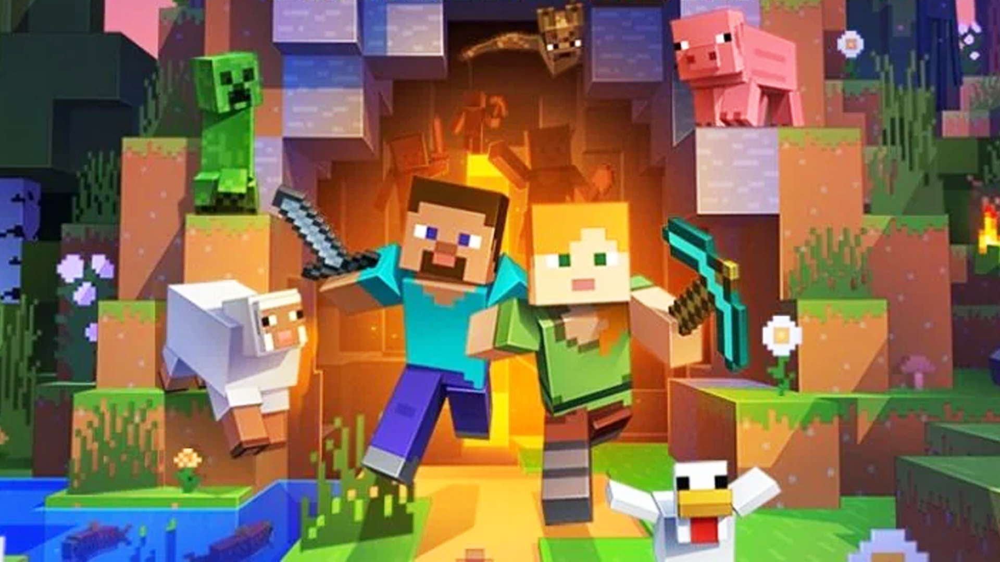
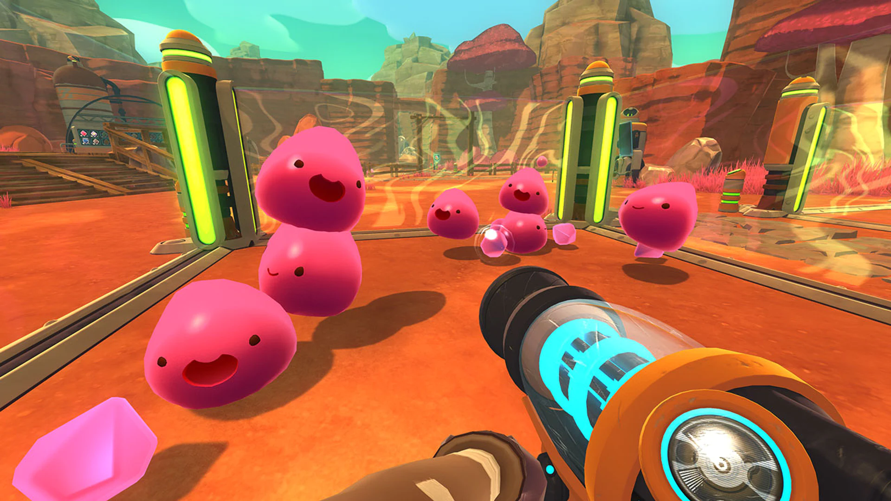

Una de las actividades que más disfruto y que forma parte esencial de mi día a día es escuchar música. Desde el momento en que me despierto, la música se convierte en mi compañera constante, creando el ambiente perfecto para empezar la mañana con energía y motivación. A lo largo del día, ya sea mientras estudio, trabajo en mis proyectos, viajo o simplemente me relajo, siempre encuentro una razón para reproducir mis canciones favoritas.
Algunos de mis artistas favoritos son:
Otra de las actividades que más disfruto es ver streams en la plataforma Twitch. Aunque últimamente, debido a la carga de trabajo en la universidad, no he podido dedicar tanto tiempo como me gustaría a esta actividad, sigue siendo una de mis favoritas. Para mí, los streams son una excelente forma de desconectar, aprender algo nuevo, o simplemente pasar un buen rato disfrutando de la creatividad y el carisma de los streamers que sigo.
Algunos de mis streamers favoritos son:
Los videojuegos han sido una de mis actividades favoritas durante mucho tiempo, y a lo largo de los años he explorado una amplia variedad de títulos. Sin embargo, hay algunos que tienen un lugar especial en mi corazón, como Minecraft, Stardew Valley y Slime Rancher.
Últimamente, la mayoría de las veces que juego lo hago en compañía de mi hermano, lo cual ha hecho que esta experiencia sea aún más divertida y significativa. Para mí, los videojuegos no solo son una forma de entretenimiento, sino también una herramienta para conectar con las personas que más quiero, explorar mundos nuevos y desconectar de la rutina diaria mientras disfruto de algo que realmente me apasiona.
 